Identité de marque · 2024
A. B. Natoli
Boutique law firm — Kew, Victoria
Refonte de l'identité d'un cabinet d'avocats de quartier fondé en 1949 : une image gravée qui honore l'héritage familial tout en affirmant un professionnalisme contemporain.
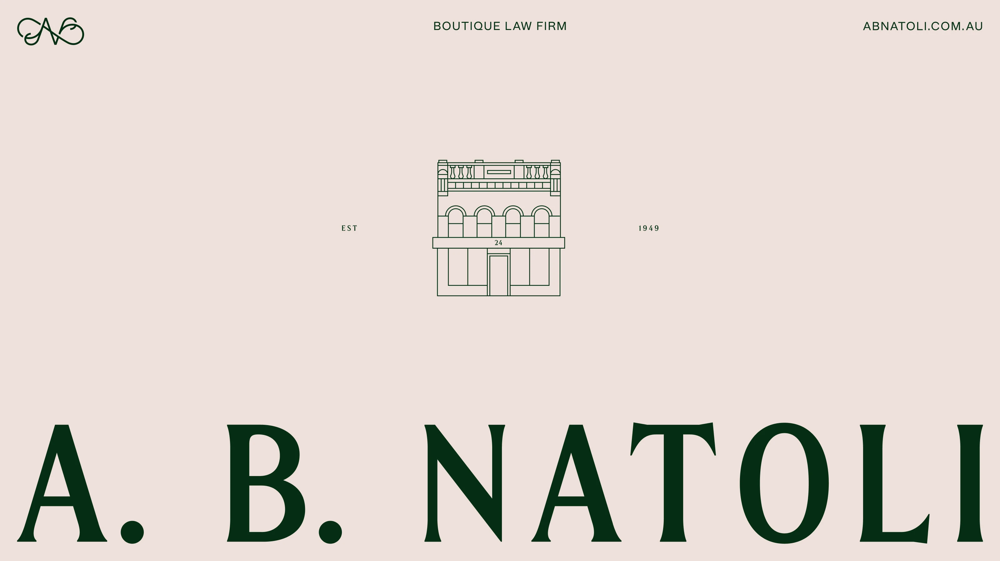
Honorer un héritage, affirmer le présent.
Fondé par Angelo Basilio Natoli en 1949, A. B. Natoli est un cabinet installé à Kew depuis trois générations. Nous avons bâti une identité sobre et chaleureuse — vert profond, rose poudré et crème — qui relie les archives de la famille à une pratique moderne du droit : un monogramme gravé, un logotype à empattements et une illustration au trait de la devanture d'origine.
- Client
- A. B. Natoli Lawyers
- Année
- 2024
- Rôle
- Direction artistique, identité
- Livrables
- Logotype & monogramme, papeterie, signalétique, web, merch
Héritage
Trois générations au 24 Cotham Road. Le point de départ : les archives de la famille.
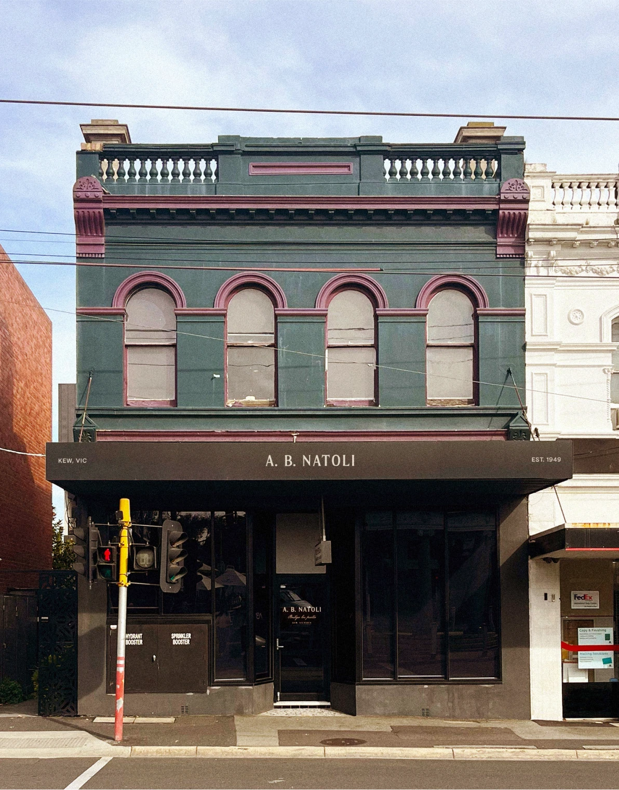
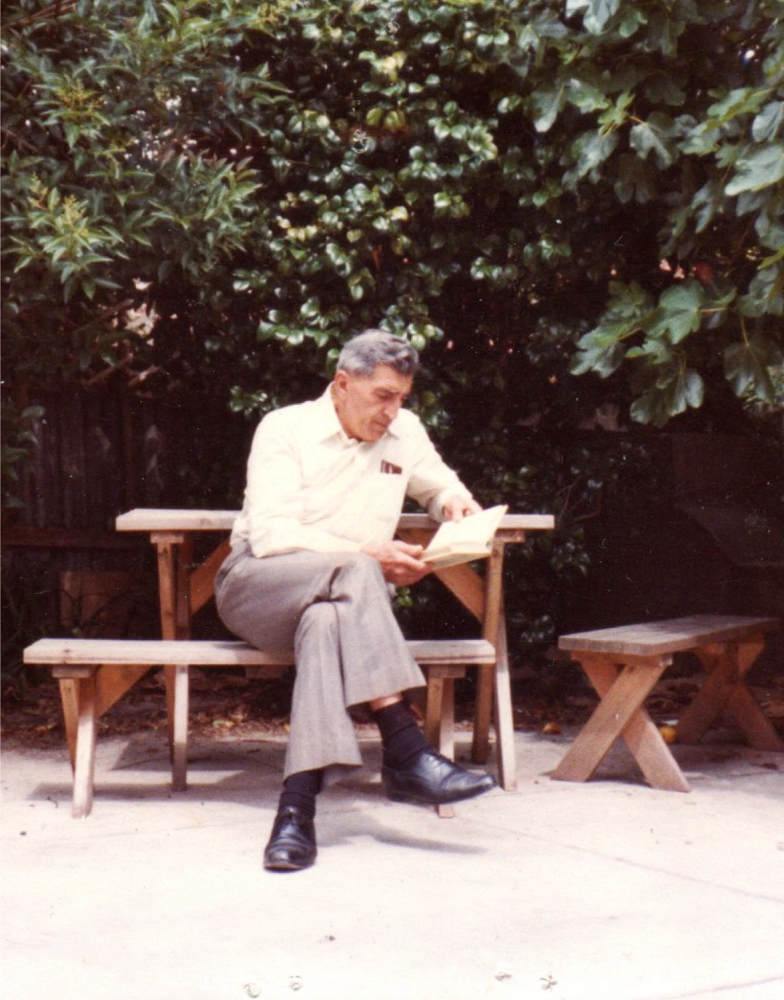
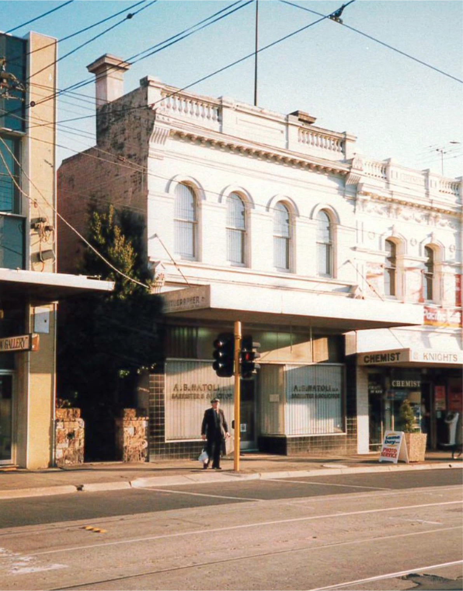
L'identité
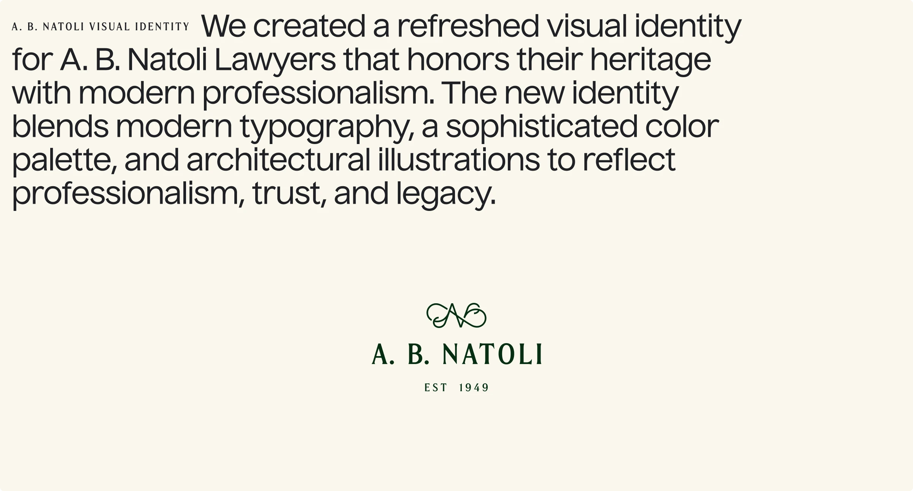
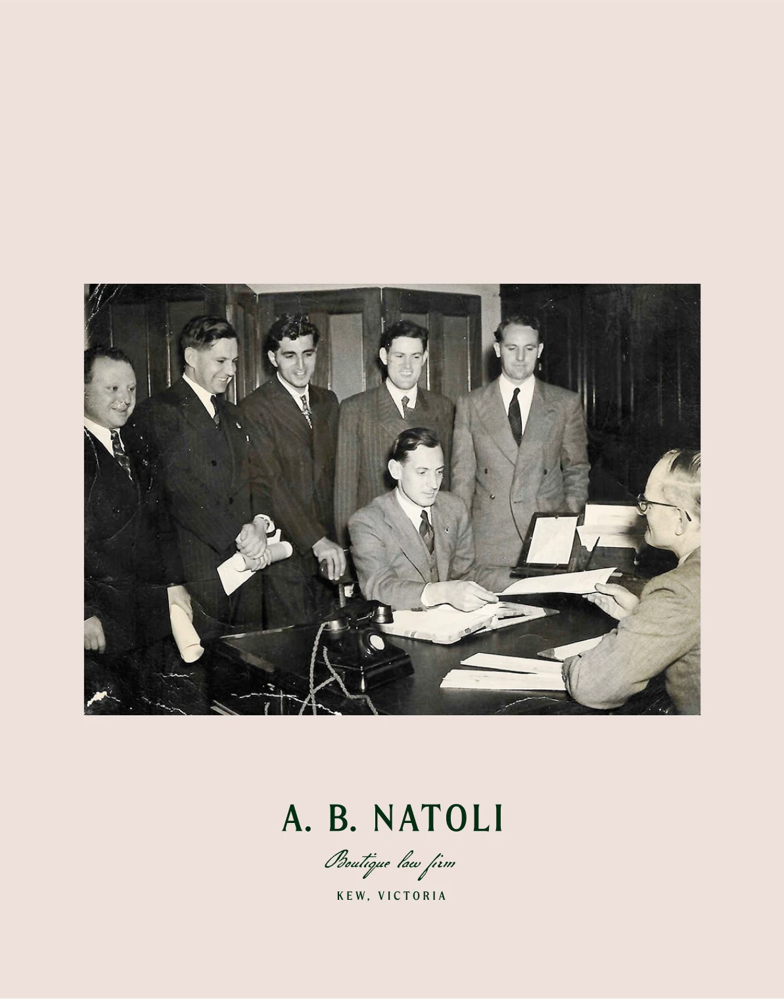
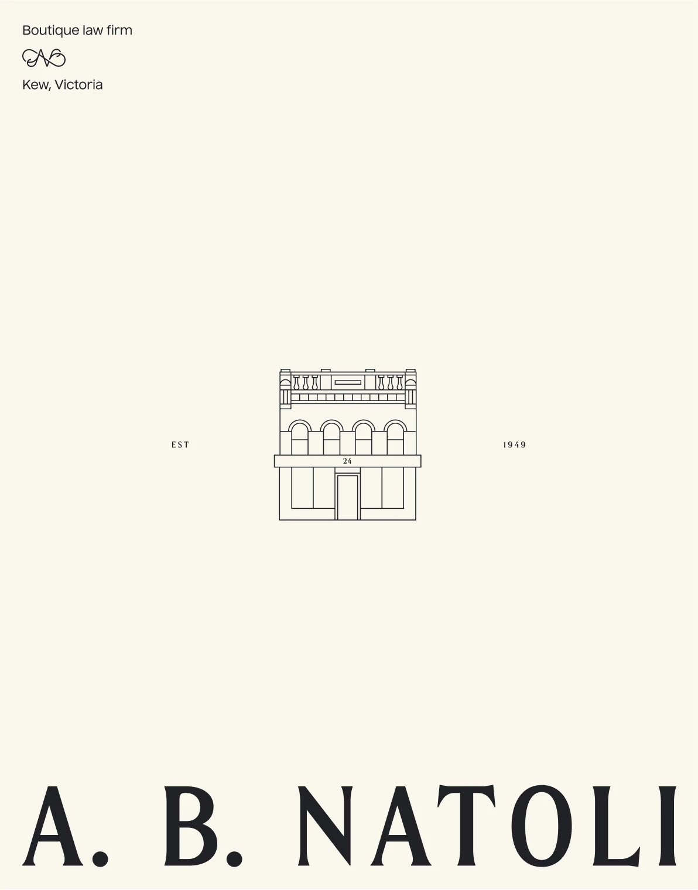
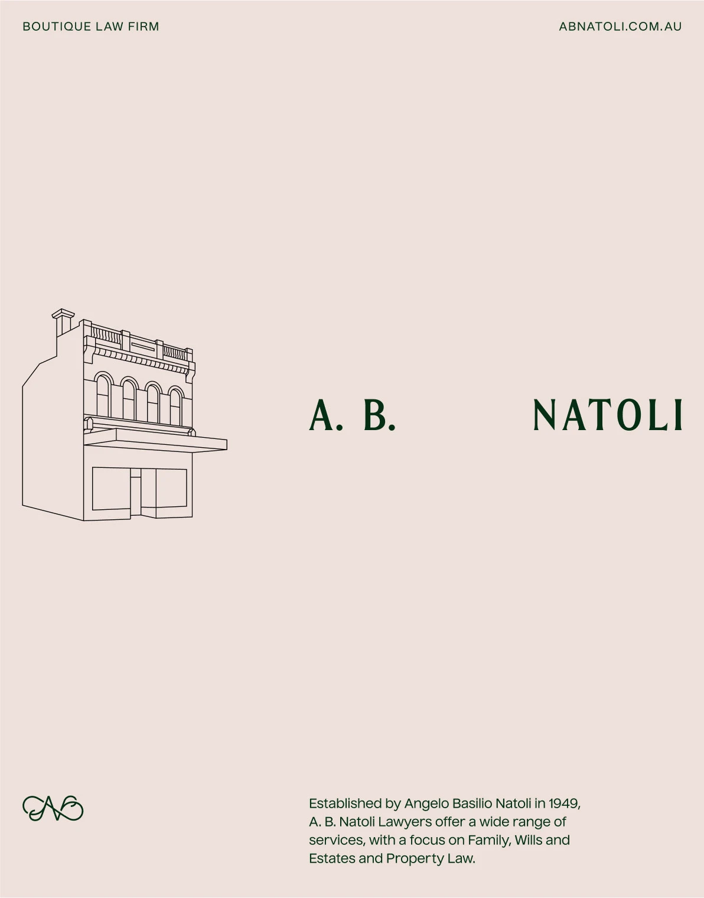
Affiches — monogramme, logotype à empattements & illustration au trait
Papeterie
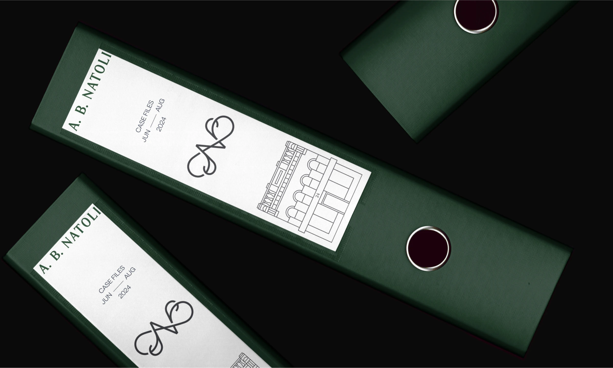
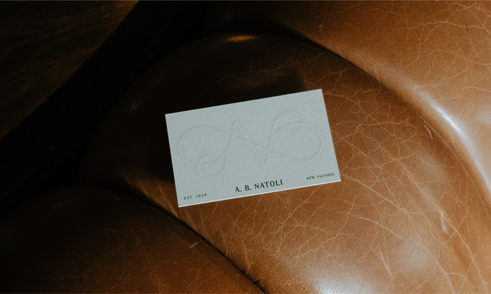
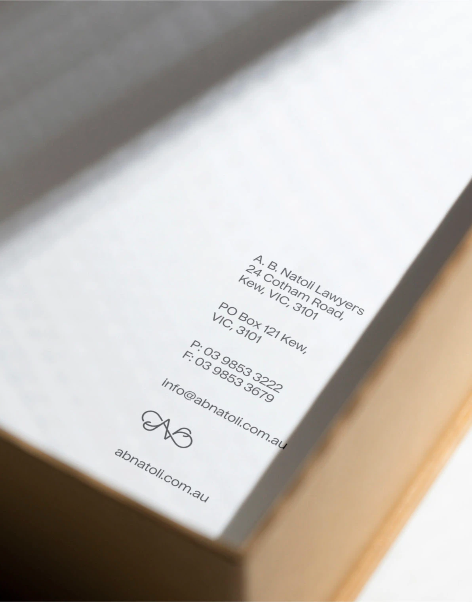
Digital
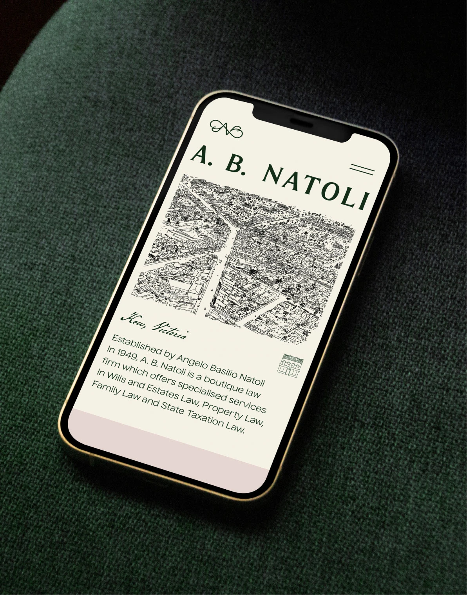
Une carte dessinée à la main ancre le cabinet dans son quartier.
Le site reprend le logotype, le monogramme et l'illustration au trait de la devanture. Typographie généreuse, hiérarchie claire et beaucoup d'air : l'expérience mobile respire la même sobriété que l'imprimé.
Merch
« Have you hugged your lawyer today? »
Un tote en coton vert bouteille, clin d'œil chaleureux qui humanise un métier réputé austère — et transforme les clients en ambassadeurs du cabinet.
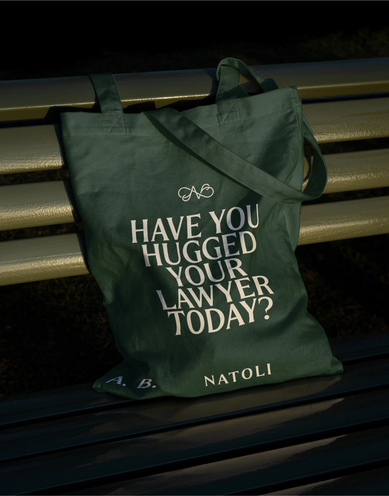